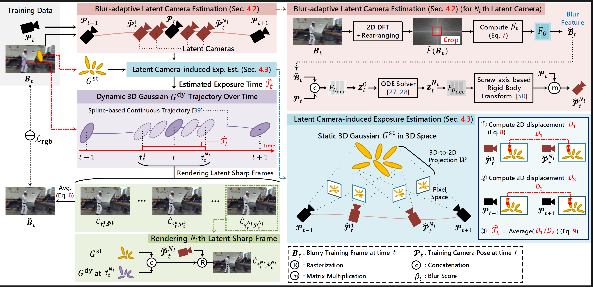
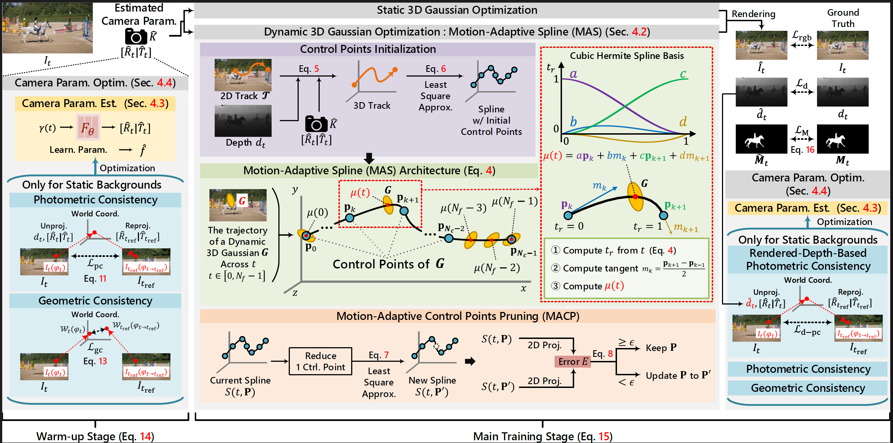
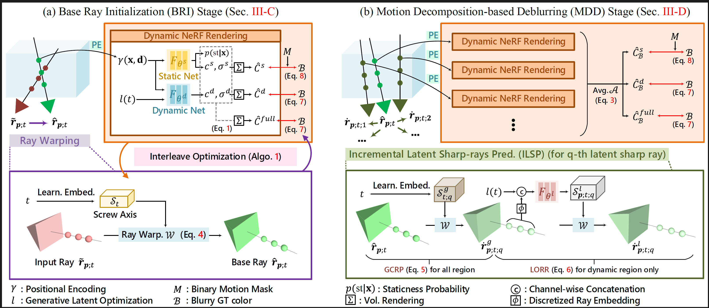
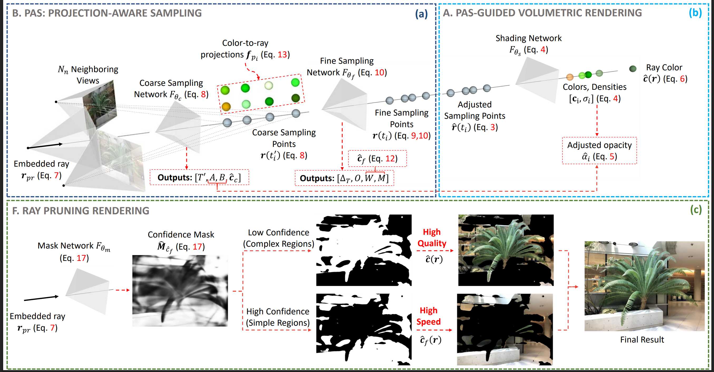
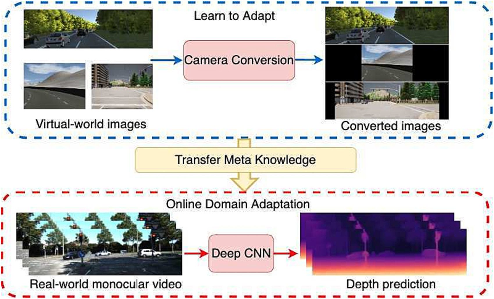

AirSplat
ECCV 2026
Ph.D. Researcher · KAIST VIC Lab
Minh-Quan
Viet Bui
I develop methods for neural rendering and dynamic 3D reconstruction from casually captured images and videos.
Open to internship/collaboration
I am a Ph.D. student in Electrical Engineering at VIC Lab, KAIST, advised by Prof. Munchurl Kim. I received my bachelor's degree from Ho Chi Minh City University of Technology - VNU, working with Dr. Duc Dung Nguyen.
My research focuses on computer vision, neural rendering, and dynamic 3D world reconstruction from casually captured images and videos.
Education
- 2023 - Present Ph.D. in Electrical Engineering KAIST
- 2022 - 2023 M.Sc. in Electrical Engineering KAIST
- 2017 - 2021 B.Sc. in Computer Science Ho Chi Minh City University of Technology - VNU
Publications
EcoSplat
CVPR 2026
EcoSplat: Efficiency-controllable Feed-forward 3D Gaussian Splatting from Multi-view Images

MoBGS: Motion Deblurring Dynamic 3D Gaussian Splatting for Blurry Monocular Video




Transfer multi-source knowledge via scale-aware online domain adaptation in depth estimation for autonomous driving
eGAC3D
PeerJ CS
eGAC3D: enhancing depth adaptive convolution and depth estimation for monocular 3D object pose detection
GAC3D
PeerJ CS
GAC3D: improving monocular 3D object detection with ground-guide model and adaptive convolution
Curriculum Vitae
The full record of my education, publications, and research experience in one PDF.
Get in touch
I'm currently open to postdoc, internship, and collaboration opportunities. Feel free to reach out.
Email
bvmquan@kaist.ac.kr
Laboratory
N24 Building, Room 1106
KAIST, Daejeon
KAIST, Daejeon